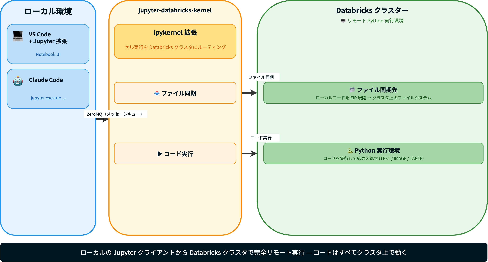

%%{init: {'theme': 'base', 'themeVariables': {'textColor': '#000000'}}}%%
pie title 2025年11月以降のコミット数比
"コーディングエージェント" : 70
"Nix" : 12
"Databricks" : 15
"その他" : 3
2026-03-06
%%{init: {'theme': 'base', 'themeVariables': {'textColor': '#000000'}}}%%
pie title 2025年11月以降のコミット数比
"コーディングエージェント" : 70
"Nix" : 12
"Databricks" : 15
"その他" : 3
堅牢.py #1 (2025-11-15) で「堅牢な Python を書く」話を聞いているときの脆弱な私
Jupyter Notebook 運用ですすみません
— uma-chan🌲 (@i9wa4_) November 20, 2025
#kenro_py
堅牢.pyのおかげで 「Databricks でもローカル開発やテストをちゃんとしたい」 という課題意識が高まって jupyter-databricks-kernel を作ったので今日はその話をします！
Databricks で堅牢なコードを書くにはローカル開発環境が必要。しかし…
| 課題 | 詳細 |
|---|---|
| ローカル開発との乖離 | VS Codeが使いにくい、Git連携が煩雑 |
| AIツールからの実行困難 | Claude CodeなどがDatabricksコードを自律実行できない |
| VS Code拡張の制約 | Spark操作はリモート — プリインストールライブラリがローカルで使えない |
ローカルの Jupyter Notebook を Databricks クラスターで直接を実行させるためのツールを作りました

Databricks Connect との違い
| 項目 | Databricks Connect | jupyter-databricks-kernel |
|---|---|---|
| Spark 計算 | クラスター | クラスター |
.toPandas() 結果 |
ローカルメモリに collect | クラスターのメモリ上に存在 |
| 通常の Python 変数 | ローカル | クラスター上 |
例: 大量データをローカルに取り込む場合
%%{init: {'theme': 'base', 'themeVariables': {'textColor': '#000000', 'actorTextColor': '#000000', 'actorBkg': '#ffffff', 'actorBorder': '#000000', 'labelTextColor': '#000000', 'loopTextColor': '#000000', 'noteTextColor': '#000000', 'noteBkgColor': '#ffffff', 'signalColor': '#000000', 'signalTextColor': '#000000', 'activationBkgColor': '#eeeeee', 'activationBorderColor': '#000000'}, 'sequence': {'mirrorActors': false}}}%%
sequenceDiagram
participant JC as Jupyter Client
participant K as jupyter-databricks-kernel
participant DC as Databricks クラスター
JC->>K: execute_request (ZeroMQ)
K->>K: do_execute()
alt 初回実行
K->>K: _sync_files() → needs_sync()=True
K->>DC: POST /api/1.2/contexts/create
K->>DC: ZIP（Base64）→ /tmp/ 展開
else 2回目以降（ファイル変更なし）
K->>K: _sync_files() → needs_sync()=False → スキップ
end
K->>DC: POST /api/1.2/commands/execute（code + contextId）
loop 1秒ごと
K->>DC: GET /api/1.2/commands/status
DC-->>K: Running → Finished
end
K->>JC: 結果（TEXT/IMAGE/TABLE）via iopub
Step 1: インストール
Step 2: 認証設定
Step 3: VS CodeでJupyter拡張を開き、カーネルに “Databricks” を選択
.gitignore 対応、ディレクトリ構造を保持)jupyter execute notebook.ipynb --kernel_name=databricks がそのままパイプラインで動くローカル開発環境が整ってはじめて、テスト・CI・AI の全ての品質管理ツールが使える。
必要な要素は3つ:
| 要素 | 役割 | 例 |
|---|---|---|
| コード実行 API | コードを文字列で渡してリモートで動かす | Command Execution API 相当 |
| ファイル同期 API | ローカルファイルをリモートに送る（ディレクトリ構造を保持） | Workspace Files API 相当 |
| セッション管理 | REPL を stateful に保つ（変数が次のセルでも生きる） | contexts/create 相当 |
この3つが揃っていれば do_execute を override すると完全リモート実行カーネルが作れる！
| パターン / ツール | 役割 | ポイント |
|---|---|---|
Notebook は関数実行のみ / ロジックは .py |
テスタビリティ | .py に切り出し → pytest で単体テスト |
| uv | 依存関係管理 | uv sync --active で Databricks 環境に直接インストール |
| mise + pre-commit + Renovate | ガードレール | コミット時 Lint / 依存更新の自動化 |
やったこと
| 課題 | 解決 |
|---|---|
| ローカル開発との乖離 | jupyter-databricks-kernel で完全リモート実行 |
| AIツールからの自律実行 | jupyter-databricks-kernel でClaude Codeが実行 |
| コード品質・テスタビリティ | .py 切り出し + uv + ガードレール |
jupyter-databricks-kernel がローカル開発を可能にし、堅牢な開発体制を整備することができるようになった！